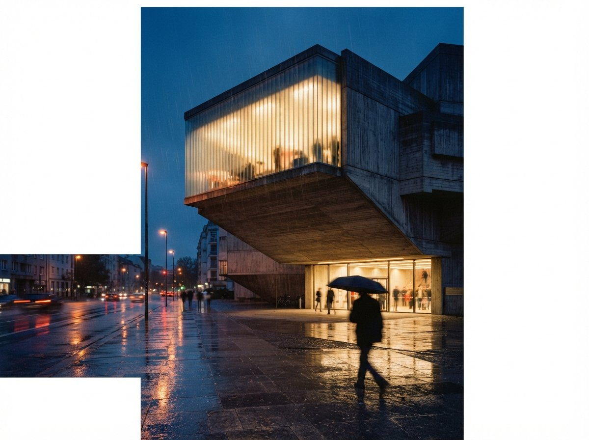

The wall is real and it is specific. A long list of the tools architects actually render with, D5 Render, Lumion, Chaos Vantage, were built on Windows and on NVIDIA's CUDA stack. Apple Silicon does not speak CUDA. It uses Metal, Apple's own graphics layer, and an M-series chip has no NVIDIA card to fall back on. So these tools do not run slowly on a Mac. They do not run at all, because nobody wrote the Mac version, and porting a real-time GPU renderer off CUDA is a year of engineering nobody has prioritised.
That sounds like bad news for the roughly half of architecture studios that work on Macs. It mostly is not, and the reason is the same shift this whole publication keeps circling back to: the AI part of rendering left the local machine. Once the heavy generation moved to the cloud, the question stopped being "does my laptop have the right GPU" and started being "can my laptop open a browser tab". A Mac can do that perfectly well.

What simply will not run, and what runs native
Start with the honest no-go list, because pretending otherwise wastes people's money. D5 Render has no Mac build. If your studio standardised on D5, a Mac is not part of that plan without a workaround. Lumion is the same story, only harder: it needs Windows and a dedicated NVIDIA GPU, so even an emulation layer does not save you. Chaos Vantage sits in the same camp, Windows plus an RTX card or nothing.
Then there is the middle tier. Enscape runs on Mac as a plugin for SketchUp and Rhino, which is genuinely useful, but it does not yet wring full performance out of the Apple GPU, so expect it to feel softer than the Windows version on equivalent hardware. The good news lives at the native end. Twinmotion runs natively on Apple Silicon with Metal acceleration, which makes it the default real-time engine for Mac-based firms and, for many, the closest thing to a D5 equivalent that does not require switching operating systems. Architects who already lean on its pipeline can see how it pairs with generation in our Twinmotion AI workflow notes. For the offline crowd, Blender, Cinema 4D, KeyShot, Octane X and V-Ray for Maya are all native with Metal support, so the path from model to photoreal still exists, it just runs through different software than the Windows shops use.
| Tool | Runs on Apple Silicon? | What a Mac architect does |
|---|---|---|
| D5 Render | No native build | Cloud Windows desktop, or pick a native engine instead |
| Lumion | No (Windows + NVIDIA) | Render farm or remote Windows GPU machine |
| Chaos Vantage | No (Windows + RTX) | Remote Windows GPU, or skip it |
| Enscape | Yes, as a plugin | Works in SketchUp and Rhino, softer than on Windows |
| Twinmotion | Yes, native + Metal | Use as the live real-time engine |
| Veras | Yes, via cloud | Drive from SketchUp or Rhino, not Revit |
| Browser AI (Magnific, Krea, Rendair) | Yes, OS-agnostic | Final image in a tab, no local GPU needed |
| ComfyUI / Stable Diffusion | Yes, with caveats | Runs via Metal, slower, some nodes break |
The AI layer mostly does not care what you run
Here is the part that changes the whole calculation. The legacy problem, no CUDA on a Mac, only bites the tools that do their compute on your local card. AI rendering increasingly does not. Veras sends your geometry to a cloud model and sends a render back, so the AI runs on someone else's GPU regardless of what is on your desk. The only Mac limit there is the host application: Veras inside Revit is off the table because Revit does not run on macOS, but Veras driven from SketchUp or Rhino works fine, and both of those are native Mac apps.
The browser-based generation tools are even simpler. Magnific, Krea, the cloud render services, the Nano Banana and ChatGPT image generation everyone is testing, all of it runs in a tab. A MacBook Air with no discrete GPU at all can produce the same final image as a maxed-out Windows tower, because neither machine is doing the rendering. The work happens in a data centre, and your laptop is a thin client with a nice screen. This is the same logic behind renting cloud compute instead of buying a GPU, and on a Mac it is not a compromise, it is the main road.
The Mac stopped being a rendering problem the moment the rendering left the Mac.
Local diffusion is the one honest caveat. You can run ComfyUI and Stable Diffusion on Apple Silicon through Metal, and for light enhancement passes it is fine. But it is slower than the same graph on an NVIDIA card, and a real fraction of the custom nodes the ComfyUI community ships assume CUDA and will not load. If your workflow is a heavy node graph you tinker with constantly, that friction is real and you should weigh it. If you mainly want a clean final image from your model, the cloud tools sidestep the whole issue.
Three ways to actually set this up
For a Mac studio, the choice comes down to three honest options, and the right one depends on how committed you are to a specific Windows-only engine.
Go native and lean on cloud AI
Run Twinmotion or Enscape for live, walkable work, then take the final frame to a browser AI tool for the photoreal pass. This needs no Windows machine, no extra licence, and no GPU upgrade. For most architects who adopted AI rendering in the last two years, this is already the workflow, they just did not realise the Mac was carrying it the whole time.
Bridge to Windows only when you must
If the studio is genuinely standardised on D5, Lumion or Vantage, do not fight it. Rent a cloud GPU desktop running Windows, or send heavy jobs to a render farm that gives you a remote NVIDIA machine. You keep the Mac for everything else and pay for Windows horsepower by the hour instead of buying a second computer that sits idle most of the week. The economics only make sense if you render constantly; otherwise the per-hour cloud route wins.
Go fully cloud and skip the local engine
The most AI-forward option drops the local real-time renderer almost entirely. Model in Rhino or SketchUp, push views straight into cloud generation, and treat the render step as a service rather than software you install. It is the lightest hardware footprint there is, and it is the route that ages best, though it does hand your project images to a third party, so weigh it against your client confidentiality obligations before you commit.
Our take: the Mac penalty is mostly gone
For years the advice to architects was blunt: if you are serious about rendering, buy a Windows machine with a big NVIDIA card. That advice is now half wrong. It still holds if your heart is set on Lumion or D5, because those tools have drawn a hard line and a Mac stays on the wrong side of it. But for AI rendering specifically, the thing this site exists to cover, the penalty has quietly evaporated, because the compute you were buying that GPU for now lives in the cloud. A Mac and a browser get you to the same final image, and you can read the trade-offs the same way you would weigh any renderer in our speed versus realism breakdown.
So before you spend two thousand on a Windows box to "do renders properly", check what you actually render with. If it is a cloud AI tool, you already had the machine. Buy the Windows hardware for Lumion, not for the future.
Based on this week's intel sweep of 2026 AI rendering coverage for architects, including comparisons of real-time and AI tools by platform support and current guidance on which renderers run native on Apple Silicon versus Windows and NVIDIA, plus Vista Studios hands-on use of Mac-based and cloud render workflows. Platform support changes; verify a tool's current Mac status before you buy hardware around it. No affiliate relationship with any tool named.